<title>桜狼異聞　大正赤ずきん</title>
<link rel="preconnect" href="https://fonts.googleapis.com">
<link rel="preconnect" href="https://fonts.gstatic.com" crossorigin>
<link rel="stylesheet" href="https://fonts.googleapis.com/css2?family=Shippori+Mincho+B1:wght@500;700;800&family=Zen+Kaku+Gothic+New:wght@400;500;700&display=swap">
<style>
/* 縦一本の巻物：夜の藍に、章ごとに桜の紋で区切る。noteに貼るため、どの章も単独で撮れる幅 680px の一段組 */
:root {
  --night: #15111d;
  --night-2: #1e1828;
  --line: #3a3046;
  --ink: #f1e9ec;
  --mute: #b6a8b5;
  --sakura: #f3b9ca;
  --beni: #e0414f;
  --gold: #cdae78;
  --display: "Shippori Mincho B1", "Hiragino Mincho ProN", "Yu Mincho", serif;
  --body: "Zen Kaku Gothic New", "Hiragino Sans", "Yu Gothic", sans-serif;
  --fs-body: clamp(17px, 3.6vw, 21px);
  --fs-small: clamp(14px, 3vw, 17px);
  --fs-note: clamp(15px, 3.3vw, 18px);
  --fs-h2: clamp(30px, 6.4vw, 44px);
  --fs-h3: clamp(21px, 4.4vw, 27px);
  color-scheme: dark;
}
* { box-sizing: border-box; }
body {
  background: var(--night);
  color: var(--ink);
  font-family: var(--body);
  font-size: var(--fs-body);
  line-height: 1.95;
  letter-spacing: .02em;
  padding-inline: 16px;
  padding-block: 0 48px;
}
.page { max-width: 680px; margin: 0 auto; display: grid; gap: 0; }
img { display: block; max-width: 100%; height: auto; }
section { padding-block: 64px 56px; display: grid; gap: 28px; }
p { margin: 0; }
h2, h3, h4 { margin: 0; font-family: var(--display); font-weight: 700; text-wrap: balance; line-height: 1.4; }

/* 章の見出し：小さな英字ではなく、和の小見出し＋大きな明朝 */
.head { display: grid; gap: 6px; justify-items: center; text-align: center; }
.head .kicker { font-size: var(--fs-small); color: var(--gold); letter-spacing: .3em; }
.head h2 { font-size: var(--fs-h2); letter-spacing: .12em; }
.orn { display: flex; align-items: center; gap: 14px; color: var(--sakura); font-size: 18px; justify-content: center; }
.orn i { flex: 0 1 120px; height: 1px; background: linear-gradient(90deg, transparent, var(--gold)); }
.orn i:last-child { background: linear-gradient(270deg, transparent, var(--gold)); }

/* ===== 表紙 ===== */
.hero { padding-block: 0 40px; gap: 0; }
.hero .art { position: relative; margin-inline: -16px; }
.hero .art img { width: 100%; }
.hero .art::after { content: ""; position: absolute; inset: auto 0 0 0; height: 38%; background: linear-gradient(transparent, var(--night)); }
.hero .titles { position: relative; margin-top: -88px; display: grid; justify-items: center; gap: 10px; text-align: center; }
.hero .genre { font-size: var(--fs-small); color: var(--gold); letter-spacing: .28em; }
.hero h1 { margin: 0; font-family: var(--display); font-weight: 800; font-size: clamp(48px, 13vw, 88px); letter-spacing: .14em; line-height: 1.15; text-shadow: 0 2px 24px rgba(0,0,0,.6); }
.hero h1 ruby rt { font-size: .2em; font-weight: 500; letter-spacing: .5em; color: var(--mute); }
.hero .sub { font-family: var(--display); font-weight: 700; font-size: clamp(26px, 6.6vw, 40px); letter-spacing: .3em; }
.red { color: var(--beni); }
.hero .quote { margin-top: 18px; font-family: var(--display); font-size: clamp(19px, 4.2vw, 25px); color: var(--sakura); }
.chips { display: flex; flex-wrap: wrap; gap: 10px; justify-content: center; margin-top: 14px; padding: 0; list-style: none; }
.chips li { font-size: var(--fs-small); border: 1px solid var(--line); border-radius: 999px; padding: 4px 16px; color: var(--ink); background: var(--night-2); line-height: 1.7; }

/* ===== 物語 ===== */
.chapter { display: grid; gap: 14px; }
.chapter h3 { font-size: var(--fs-h3); display: flex; align-items: baseline; gap: 14px; }
.chapter h3 small { font-size: var(--fs-small); color: var(--gold); letter-spacing: .2em; font-weight: 500; }
.chapter p + p { margin-top: 2px; }
.story-text { font-family: var(--display); font-weight: 500; line-height: 2.05; }
figure { margin: 0; display: grid; gap: 10px; }
figcaption { font-size: var(--fs-small); color: var(--mute); line-height: 1.7; }
.wide { border-radius: 4px; overflow: hidden; }
.moon-line { font-family: var(--display); font-size: clamp(22px, 5vw, 30px); text-align: center; line-height: 1.8; padding-block: 12px; }
.moon-line b { color: var(--beni); font-weight: 800; }

/* ===== 登場人物 ===== */
.lead-card { display: grid; gap: 18px; }
.lead-card img { border-radius: 4px; }
.name { display: flex; align-items: baseline; gap: 12px; flex-wrap: wrap; }
.name h3 { font-size: clamp(28px, 6vw, 38px); }
.name small { color: var(--mute); font-size: var(--fs-small); }
.line { font-family: var(--display); color: var(--sakura); font-size: clamp(19px, 4vw, 23px); }
.pair { display: grid; grid-template-columns: 1fr 1fr; gap: 20px; }
.pair > * { min-width: 0; }
.mini { display: grid; gap: 8px; align-content: start; }
.mini h4 { font-size: var(--fs-h3); }
.mini p { font-size: var(--fs-note); line-height: 1.85; color: var(--ink); }
.dogs { display: grid; grid-template-columns: repeat(3, 1fr); gap: 12px; align-items: end; }
.dog { display: grid; gap: 6px; justify-items: center; text-align: center; min-width: 0; }
.dog img { height: clamp(90px, 22vw, 140px); width: auto; }
.dog b { font-family: var(--display); font-size: var(--fs-h3); line-height: 1.3; }
.dog span { font-size: var(--fs-small); color: var(--mute); line-height: 1.6; }
.king { display: grid; grid-template-columns: 42% 1fr; gap: 20px; align-items: center; padding: 22px; border: 1px solid var(--line); background: radial-gradient(circle at 20% 40%, rgba(224,65,79,.18), transparent 60%), var(--night-2); border-radius: 4px; }
.king > * { min-width: 0; }

/* ===== 見どころ ===== */
.point { display: grid; grid-template-columns: 1fr 40%; gap: 26px; align-items: center; }
.point > * { min-width: 0; }
.point.flip { grid-template-columns: 40% 1fr; }
.point.flip .txt { order: 2; }
.point h3 { font-size: var(--fs-h3); margin-bottom: 10px; }
.point h3 .n { display: block; font-size: var(--fs-small); color: var(--gold); letter-spacing: .25em; font-family: var(--body); font-weight: 500; }
.shot img { border-radius: 10px; border: 1px solid var(--line); }
.shots2 { display: grid; grid-template-columns: 1fr 1fr; gap: 16px; }
.shots2 > * { min-width: 0; }
.specials { display: flex; flex-wrap: wrap; gap: 8px 10px; margin-top: 12px; padding: 0; list-style: none; }
.specials li { font-family: var(--display); font-weight: 700; color: var(--sakura); border-bottom: 1px solid var(--sakura); line-height: 1.6; }

/* ===== 個人開発 ===== */
.facts { display: grid; grid-template-columns: repeat(3, 1fr); gap: 12px; }
.fact { display: grid; gap: 2px; padding: 16px 12px; border: 1px solid var(--line); background: var(--night-2); border-radius: 4px; text-align: center; min-width: 0; }
.fact b { font-family: var(--display); font-size: clamp(30px, 7vw, 44px); line-height: 1.2; color: var(--sakura); font-variant-numeric: tabular-nums; }
.fact b small { font-size: .45em; color: var(--ink); margin-left: 2px; }
.fact span { font-size: var(--fs-small); color: var(--mute); line-height: 1.5; }
.sheet { background: #c9c7cc; border-radius: 4px; }
.arrow { text-align: center; font-family: var(--display); color: var(--gold); font-size: var(--fs-small); letter-spacing: .2em; }
.sprites { display: grid; grid-template-columns: repeat(4, 1fr); gap: 4px; align-items: end; padding: 18px 12px; border-radius: 4px; background: radial-gradient(ellipse at 50% 100%, rgba(243,185,202,.14), transparent 70%), var(--night-2); border: 1px solid var(--line); }
.sprites img { width: 100%; height: clamp(90px, 21vw, 140px); object-fit: contain; object-position: bottom; }

/* ===== 開発の体制 ===== */
.stack { display: grid; gap: 0; }
.node { display: grid; grid-template-columns: 96px 1fr; gap: 18px; align-items: start; padding: 20px; border: 1px solid var(--line); background: var(--night-2); border-radius: 4px; }
.node > * { min-width: 0; }
.node .who { font-family: var(--display); font-weight: 800; font-size: clamp(19px, 4vw, 23px); line-height: 1.3; color: var(--sakura); }
.node .who small { display: block; font-family: var(--body); font-weight: 500; font-size: 13px; color: var(--mute); letter-spacing: .05em; margin-top: 4px; }
.node p { font-size: var(--fs-note); line-height: 1.85; }
.node ul { margin: 6px 0 0; padding-left: 1.1em; font-size: var(--fs-note); line-height: 1.85; }
.node.me { border-color: var(--gold); }
.node.me .who { color: var(--gold); }
.link { display: grid; justify-items: center; color: var(--gold); font-size: var(--fs-small); line-height: 1.5; padding-block: 8px; }
.link::before { content: ""; width: 1px; height: 18px; background: var(--gold); }
.link::after { content: ""; width: 1px; height: 18px; background: var(--gold); }
.split { display: grid; grid-template-columns: 1fr 1fr; gap: 12px; }
.split > * { min-width: 0; }
.split .node { grid-template-columns: 1fr; gap: 8px; }

/* ===== 結び ===== */
.end { text-align: center; justify-items: center; }
.end .url { font-family: var(--body); font-weight: 700; font-size: clamp(18px, 4.4vw, 26px); color: var(--ink); text-decoration: none; border-bottom: 2px solid var(--beni); padding-bottom: 2px; overflow-wrap: anywhere; }
.end .url:focus-visible { outline: 2px solid var(--sakura); outline-offset: 4px; }

@media (max-width: 520px) {
  .point, .point.flip { grid-template-columns: 1fr; }
  .point.flip .txt { order: 0; }
  .point .shot { max-width: 300px; justify-self: center; }
  .pair, .split { grid-template-columns: 1fr; }
  .king { grid-template-columns: 1fr; }
  .node { grid-template-columns: 1fr; gap: 8px; }
  .sprites { grid-template-columns: repeat(4, 1fr); }
}
</style>

<main class="page">

<!-- 表紙 -->
<section class="hero" id="top">
  <div class="art">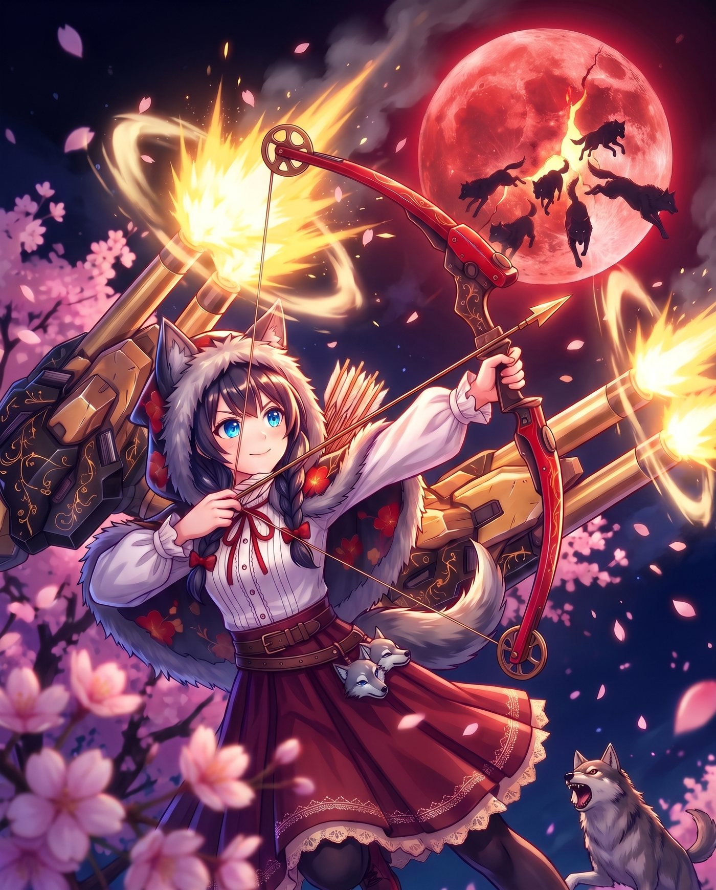</div>
  <div class="titles">
    <div class="genre">スマホで遊べる　和風防衛アクション</div>
    <h1><ruby>桜狼異聞<rt>おうろういぶん</rt></ruby></h1>
    <div class="sub">大正<span class="red">赤</span>ずきん</div>
    <p class="quote">「おばあちゃんの家には、<br>一匹だって近づけさせないんだから♪」</p>
    <ul class="chips">
      <li>ブラウザですぐ遊べる</li>
      <li>スマホ縦画面</li>
      <li>九十九夜の防衛戦</li>
      <li>個人開発</li>
    </ul>
  </div>
</section>

<!-- 物語 -->
<section id="story">
  <div class="head">
    <div class="orn"><i></i>❀<i></i></div>
    <span class="kicker">ものがたり</span>
    <h2>物語</h2>
  </div>

  <div class="chapter">
    <h3><small>其の一</small>狼狩りの猟師</h3>
    <div class="story-text">
      <p>明治のはじめ。桜の名所として知られる山あいの町に、腕利きの猟師がいました。</p>
      <p>ある春の晩、町はずれの森で、ひとりの娘が狼の群れに囲まれていました。駆けつけた猟師は、背負った大砲と紅い弓で群れを一匹残らず退治し、娘を救います。</p>
      <p>その娘こそ、のちのおばあさん。それが縁でふたりは結ばれ、森の入り口に家を構えて静かに暮らしました。</p>
    </div>
  </div>

  <figure>
    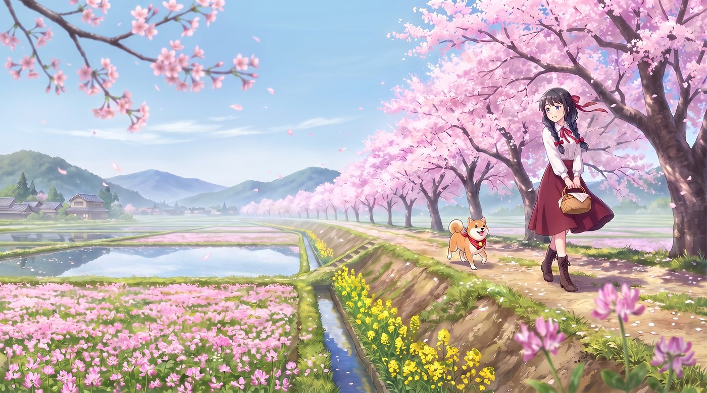
    <figcaption>休みのたびに、孫娘はおばあさんの家へ遊びに来ます。</figcaption>
  </figure>

  <div class="chapter">
    <h3><small>其の二</small>遺されたもの</h3>
    <div class="story-text">
      <p>時は流れて大正。町には汽車が通り、家も洋館づくりの二階家に建て替えられました。猟師――おじいさんは、数年前に世を去っています。</p>
      <p>家に遺されたのは、からくり仕掛けの大砲、紅い弓、二振りの大ナイフ、そして三匹の番犬。おじいさんは最期まで「狼はまた来る」と言い残していました。</p>
      <p>その言葉を信じていたのは、幼いころから狩りの手ほどきを受けてきた孫娘だけでした。</p>
    </div>
  </div>

  <div class="chapter">
    <h3><small>其の三</small>紅い月が裂ける夜</h3>
    <div class="story-text">
      <p>大正のある春、桜が満開を迎えた晩。空に、血のように紅い満月が昇りました。</p>
      <p>月に一筋の裂け目が走り、異界の狼たちがあふれ出します。かつておじいさんに滅ぼされた群れの、さらに奥に潜んでいた眷属たち。狙いは、おじいさんが遺した家と、その一族です。</p>
    </div>
  </div>

  <p class="moon-line">裂け目は<b>九十九夜</b>のあいだ開き続け、<br>夜ごとに狼は増えていく。</p>
</section>

<!-- 登場人物 -->
<section id="people">
  <div class="head">
    <div class="orn"><i></i>❀<i></i></div>
    <span class="kicker">とうじょうじんぶつ</span>
    <h2>登場人物</h2>
  </div>

  <div class="lead-card">
    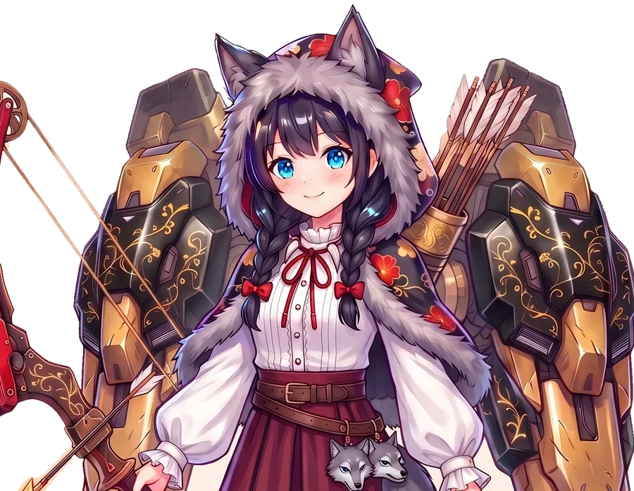
    <div class="name"><h3>赤ずきん</h3><small>猟師の孫娘</small></div>
    <p>狼の耳のフードに、背中にはおじいさんの主砲、手には二振りのナイフと紅い弓。ふだんはのんびり屋で、鼻歌まじりに狼を数えます。見た目はかわいい女の子ですが、猟師の技をすべて受け継いだ彼女こそ、狼から見れば最も恐ろしい相手です。</p>
    <p class="line">「今夜は何匹かな♪」</p>
  </div>

  <div class="pair">
    <figure class="mini">
      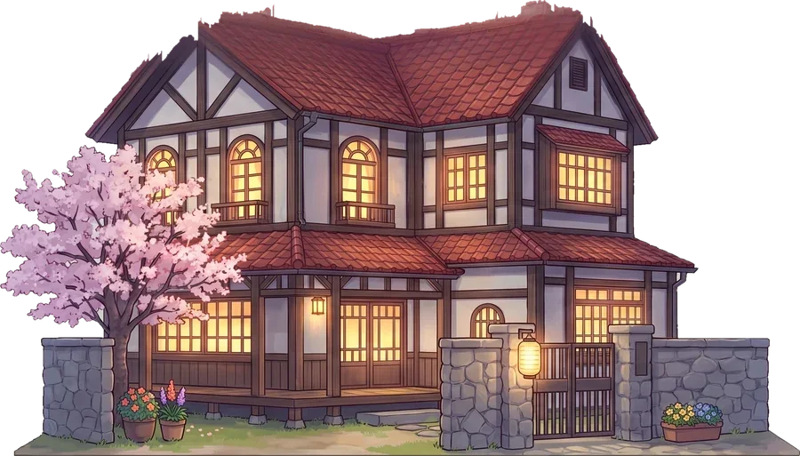
      <h4>おばあさん</h4>
      <p>かつて猟師に救われた娘。おっとりしていますが芯は強く、狼の夜にも家を離れません。この家が落ちたら負けです。</p>
      <p class="line" style="font-size:var(--fs-small)">「無理をおしでないよ。……でも、頼んだよ」</p>
    </figure>
    <div class="mini">
      <h4>三匹の番犬</h4>
      <p>おじいさんが育てた番犬たち。昼のうちに役目（守り・攻撃・支援）を決めておくと、夜は自分で考えて狼に噛みつきます。</p>
      <div class="dogs">
        <div class="dog">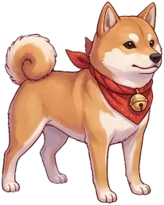<b>豆助</b><span>柴・足が速い</span></div>
        <div class="dog">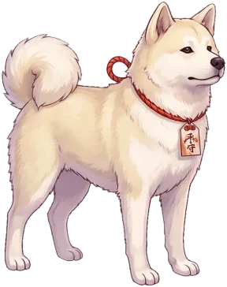<b>白雪</b><span>秋田・打たれ強い</span></div>
        <div class="dog">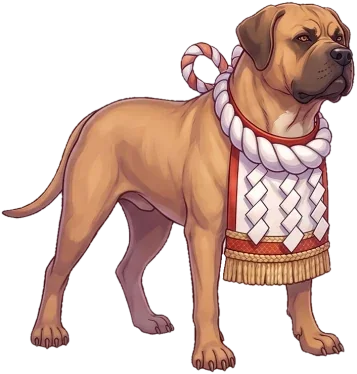<b>鉄丸</b><span>土佐・ひと噛みが重い</span></div>
      </div>
    </div>
  </div>

  <div class="king">
    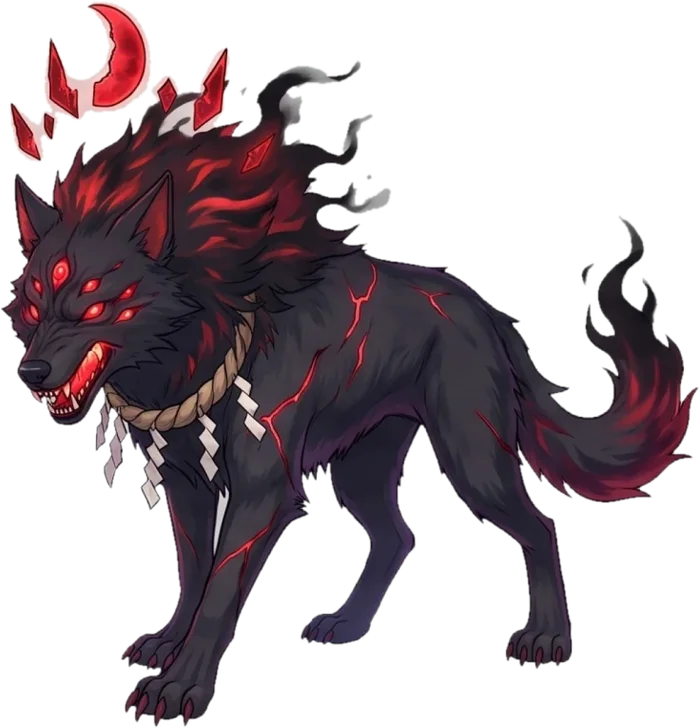
    <div class="mini">
      <h4>狼王</h4>
      <p>裂け目のいちばん奥で眠る、かつて封じられた大神。九十九夜目、ついに姿を現します。</p>
    </div>
  </div>
</section>

<!-- 見どころ -->
<section id="play">
  <div class="head">
    <div class="orn"><i></i>❀<i></i></div>
    <span class="kicker">みどころ</span>
    <h2>ゲームの見どころ</h2>
  </div>

  <div class="point">
    <div class="txt">
      <h3><span class="n">其の一</span>夜ごとに増える狼から、家を守る</h3>
      <p>スマホを縦に持ち、右の裂け目から押し寄せる狼を、左の家の前で迎え撃ちます。霧の夜、群れの夜、鎧の夜、桜吹雪の夜。毎晩ちがう顔ぶれが来て、九十九夜を守り切れば狼は絶滅です。</p>
    </div>
    <figure class="shot">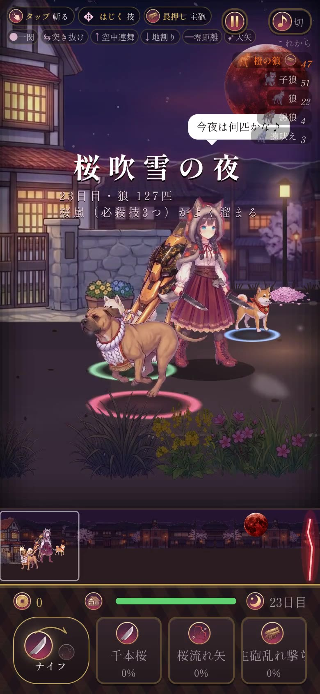<figcaption>23日目「桜吹雪の夜」</figcaption></figure>
  </div>

  <div class="point flip">
    <div class="txt">
      <h3><span class="n">其の二</span>ナイフ・主砲・弓の三つの武器</h3>
      <p>主力は二振りのナイフ。走り込んで斬り、斬り上げて、叩き落とします。群れには背中の主砲をまとめて撃ち込み、遠くの狼は紅い弓で射抜きます。主砲は撃つほど熱くなるので、温度計を見ながら使います。</p>
    </div>
    <figure class="shot">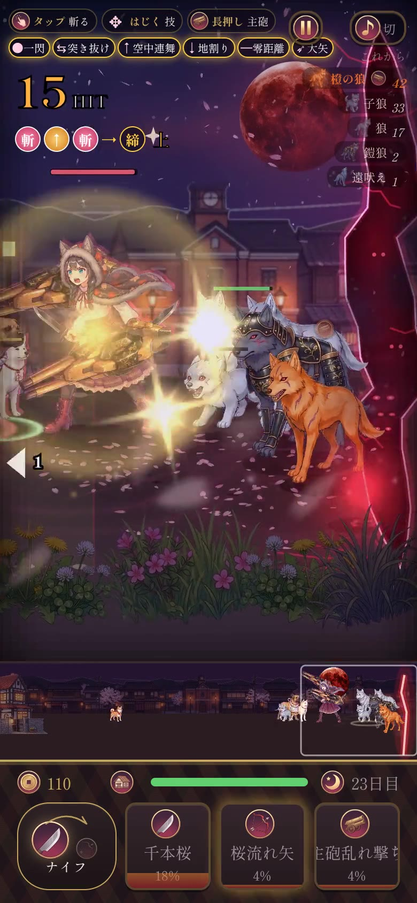<figcaption>群れには主砲</figcaption></figure>
  </div>

  <div class="point">
    <div class="txt">
      <h3><span class="n">其の三</span>必殺技「桜嵐」</h3>
      <p>戦ってゲージが満タンになったら、桜嵐を放てます。使った武器ごとに溜まる必殺技は三つあります。</p>
      <ul class="specials"><li>千本桜</li><li>桜流れ矢</li><li>主砲乱れ撃ち</li></ul>
    </div>
    <figure class="shot">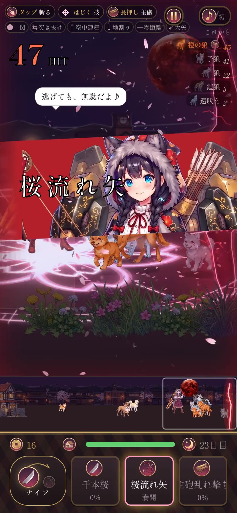<figcaption>桜流れ矢のカットイン</figcaption></figure>
  </div>

  <div class="shots2">
    <figure class="shot">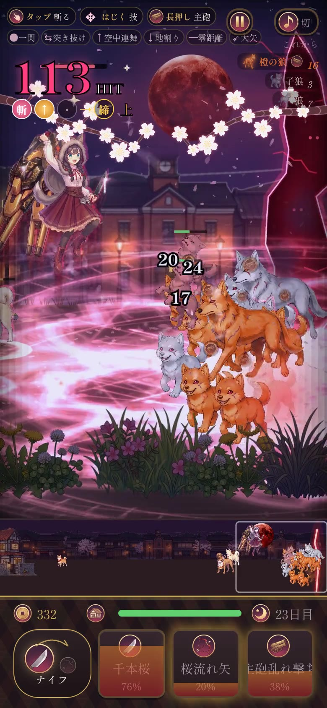<figcaption>千本桜。駆け抜けた跡が光ります</figcaption></figure>
    <figure class="shot">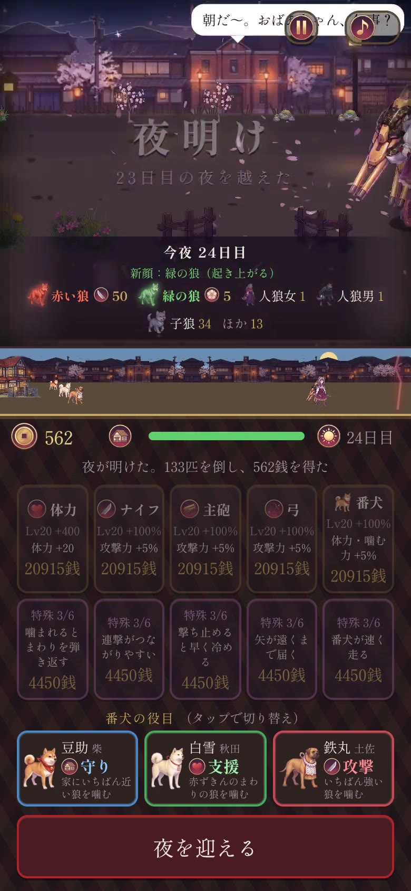<figcaption>夜明け。稼いだ銭で強化して次の夜へ</figcaption></figure>
  </div>

  <div class="point flip" style="grid-template-columns:1fr">
    <div class="txt">
      <h3><span class="n">其の四</span>昼は支度、夜は本番</h3>
      <p>夜を越えると、倒した狼の分だけ銭が手に入ります。体力やナイフ、主砲、弓を強くして、番犬の役目を決めたら、また次の夜へ。</p>
    </div>
  </div>
</section>

<!-- 個人開発：アセット -->
<section id="assets">
  <div class="head">
    <div class="orn"><i></i>❀<i></i></div>
    <span class="kicker">こじんかいはつ</span>
    <h2>赤ずきんの動きの絵</h2>
  </div>

  <p>このゲームはひとりで作っています。ゲームの中の赤ずきんは、動きごとに一枚ずつ用意した絵でできています。構え、突き、宙での斬り、回転斬り、弓をつがえる、主砲を撃つ、ひるむ、決めポーズ。表情もそれぞれ描き分けています。</p>

  <div class="facts">
    <div class="fact"><b>62<small>枚</small></b><span>赤ずきんの絵</span></div>
    <div class="fact"><b>41<small>枚</small></b><span>狼・カラスの絵</span></div>
    <div class="fact"><b>148<small>枚</small></b><span>ゲーム全体の絵</span></div>
  </div>

  <figure>
    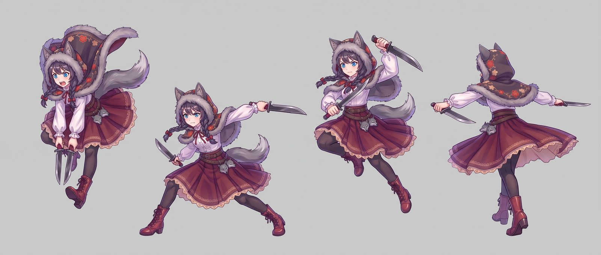
    <figcaption>ナイフの技：突き下ろし・一閃の振り抜き・宙の斜め斬り・回転斬り</figcaption>
  </figure>
  <figure>
    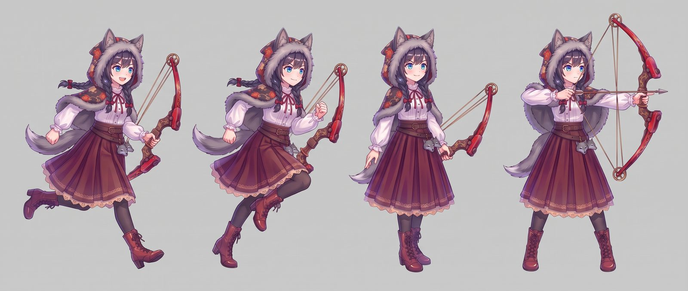
    <figcaption>弓：走る2コマ・下げて待つ・つがえて構える</figcaption>
  </figure>
  <figure>
    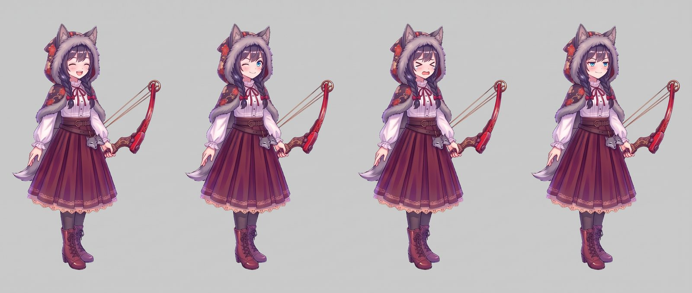
    <figcaption>弓を持ったときの表情差分</figcaption>
  </figure>

  <div class="arrow">▼　切り出して、ゲームの中へ　▼</div>
  <div class="sprites">
    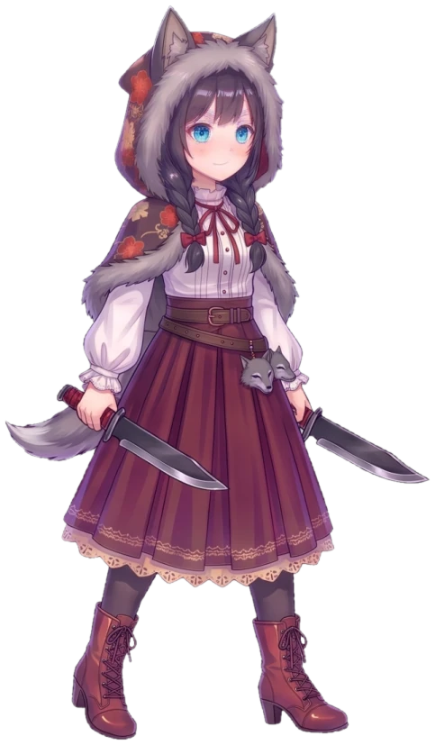
    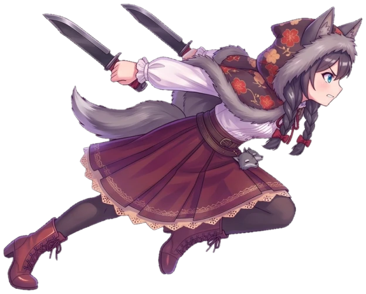
    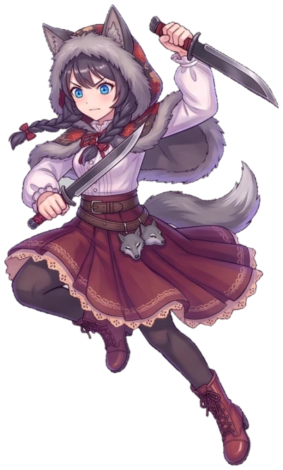
    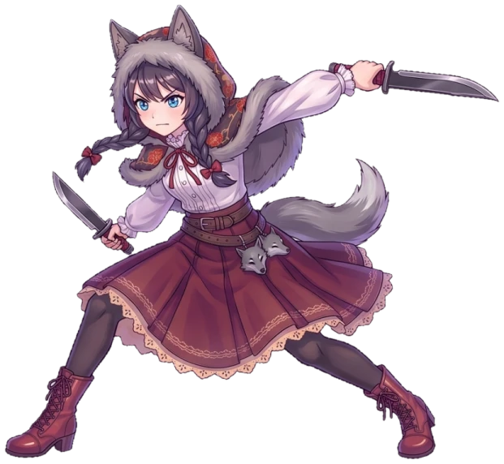
    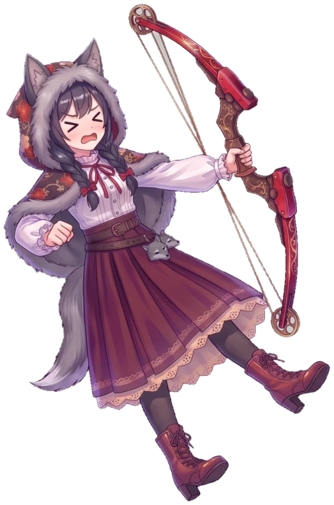
    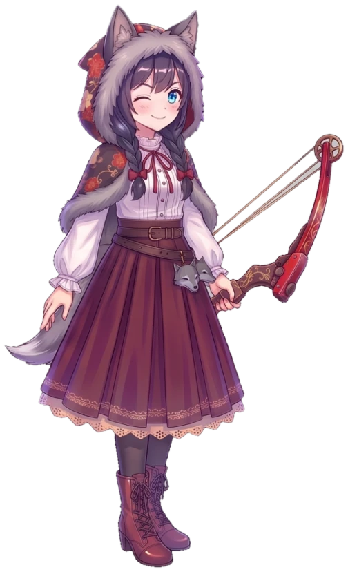
    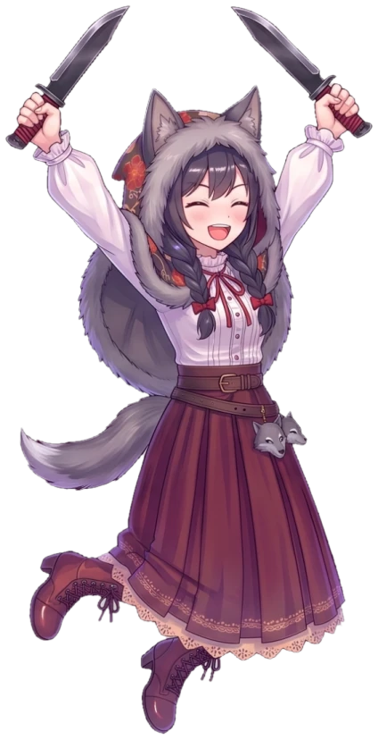
    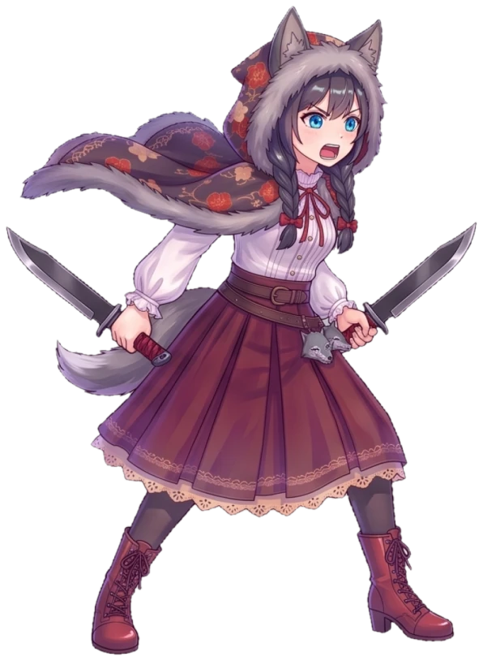
  </div>
</section>

<!-- 開発の体制 -->
<section id="stack">
  <div class="head">
    <div class="orn"><i></i>❀<i></i></div>
    <span class="kicker">かいはつのたいせい</span>
    <h2>ひとり＋AIで作る</h2>
  </div>

  <p>作るのは、私と三つの道具です。私が「どうしたいか」を決めて遊んで確かめ、手を動かす部分は AI に任せています。</p>

  <div class="stack">
    <div class="node me">
      <div class="who">作者<small>決める・遊ぶ</small></div>
      <p>物語と見た目の方向を決め、遊んでみて「ここが変」を伝えます。</p>
    </div>
    <div class="link">指示と感想</div>
    <div class="node">
      <div class="who">Claude<small>Claude Code</small></div>
      <div>
        <p>ゲームのプログラムと調整のほぼ全部を担当しています。</p>
        <ul>
          <li>TypeScript ＋ PixiJS、約9,300行</li>
          <li>生成した絵の切り出しと加工</li>
          <li>自動で遊ぶプログラムに99晩を通しで遊ばせ、難しさを数字で調整</li>
          <li>プレイ動画の撮影も自動</li>
        </ul>
      </div>
    </div>
    <div class="link">絵を頼む ／ 更新を送る</div>
    <div class="split">
      <div class="node">
        <div class="who">Gemini<small>画像の生成</small></div>
        <p>キャラクター、狼、番犬、背景、動きの絵。顔を参照画像で固定して、絵柄をそろえています。</p>
      </div>
      <div class="node">
        <div class="who">GitHub<small>置き場所と公開</small></div>
        <p>コードと素材をすべてここに置いています。更新すると GitHub Pages に自動で公開され、そのままスマホで遊べます。</p>
      </div>
    </div>
  </div>
</section>

<!-- 結び -->
<section class="end" id="end">
  <div class="orn"><i></i>❀<i></i></div>
  <h2 style="font-size:var(--fs-h2)">紅い月の夜に、<br>会いにきてください。</h2>
  <p>スマホのブラウザで、そのまま遊べます。</p>
  <a class="url" href="https://amanesf.github.io/akazukin/">amanesf.github.io/akazukin</a>
</section>

</main>
